Here i am going to show you the easiest way possible to share files between your PC and iphone. I have suffered this problem a lot
with my low storage iPhone, and now i have found the great solution for it
WIRELESS FILE TRANSFER
WITHOUT ANY INTERNET REQUIRED
1. Connect your iPhone's hotpot in pc
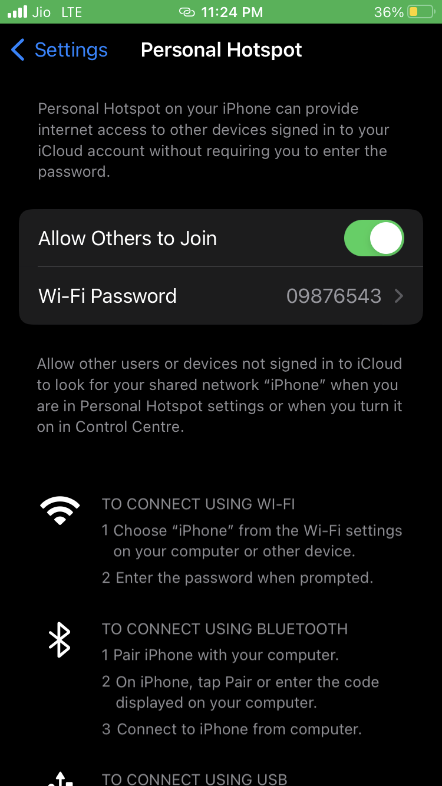
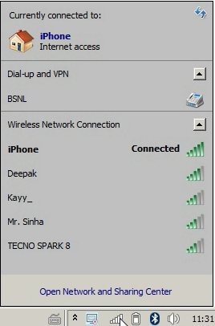
2. Create new user
- Go to start -> click on user icon -> click on manage another account -> create a new account
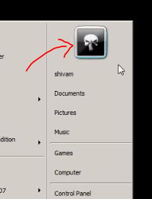
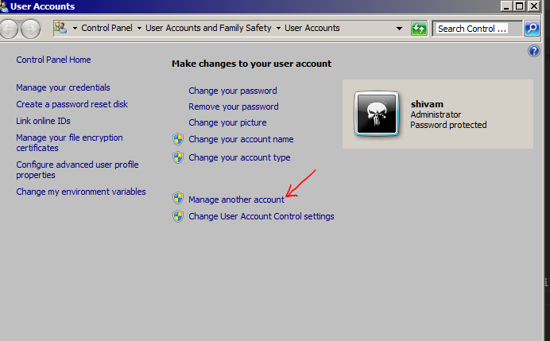
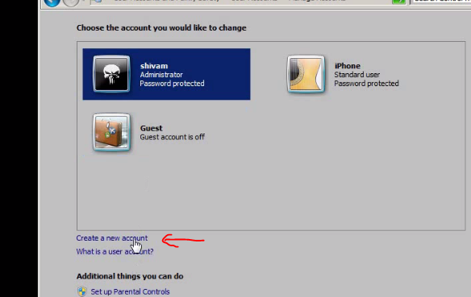
- name it & set password
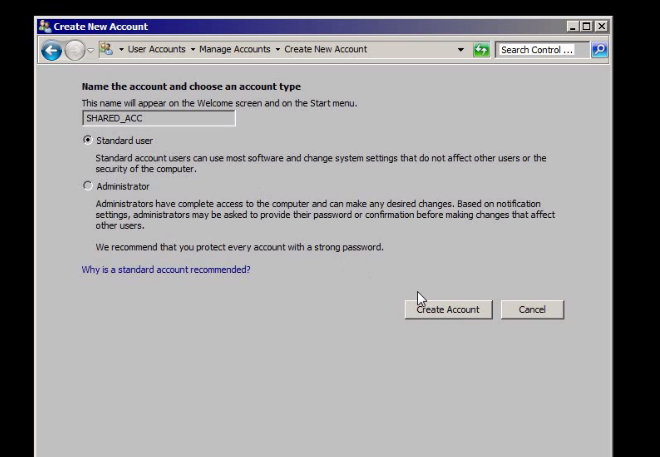
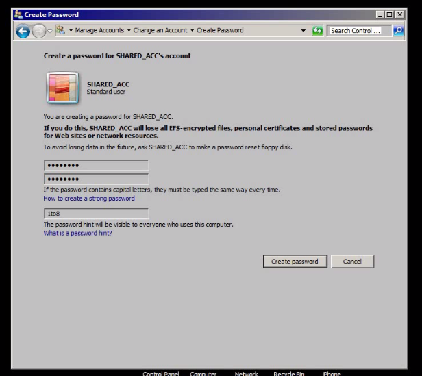
3. Create folder on desktop and share it
- Right click on folder ->share with specific people -> select newely created account -> give read and write permission
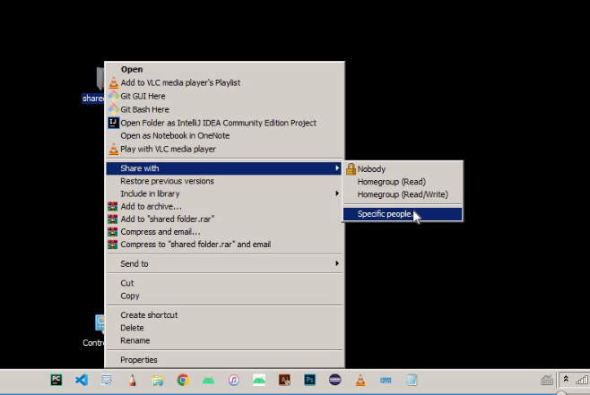
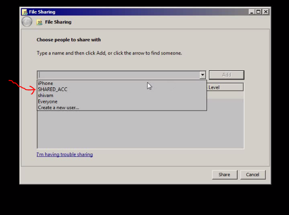
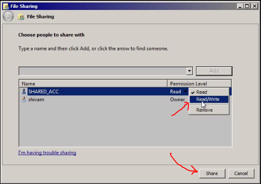
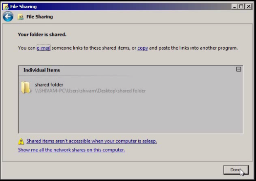
NOW GO TO FOLDER PROPERTIES -> advance Sharing
tick share this folder
then click on permissions
add the name of new user
select the user -> give full permission
apply ok -> apply ok
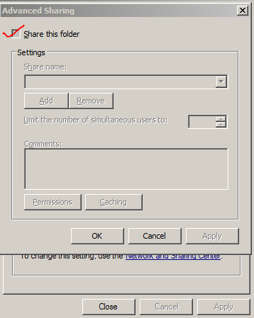
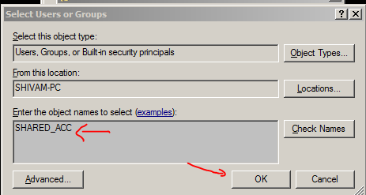
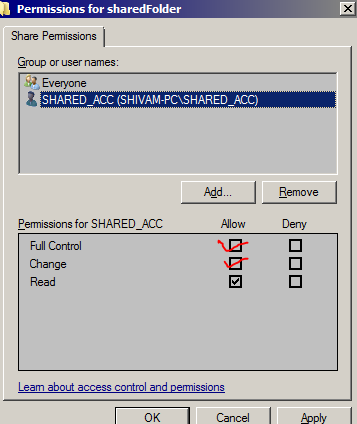
NOW YOU ARE DONE WITH SHARING THE FOLDER
4. Copy the ipAddress from
-> open network and sharing center
-> go to connections
-> go to details and copy ipv4 address
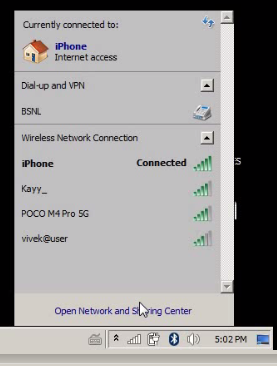
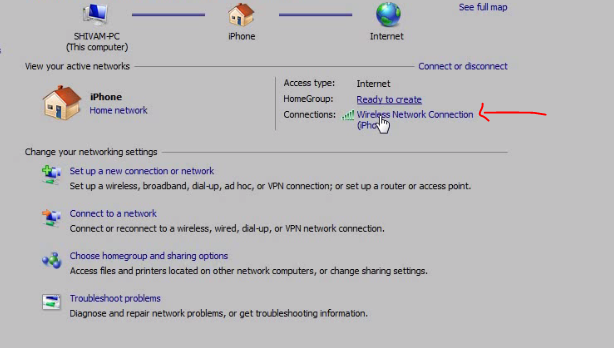
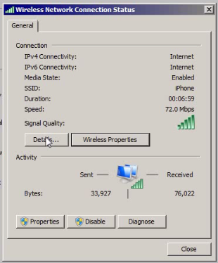
5 .open Files App in Iphone
Click three dots in right upper corner
Click to connect to server
Type smb://YouriPaddress
Login with the user name & password (of windows that we newely created)
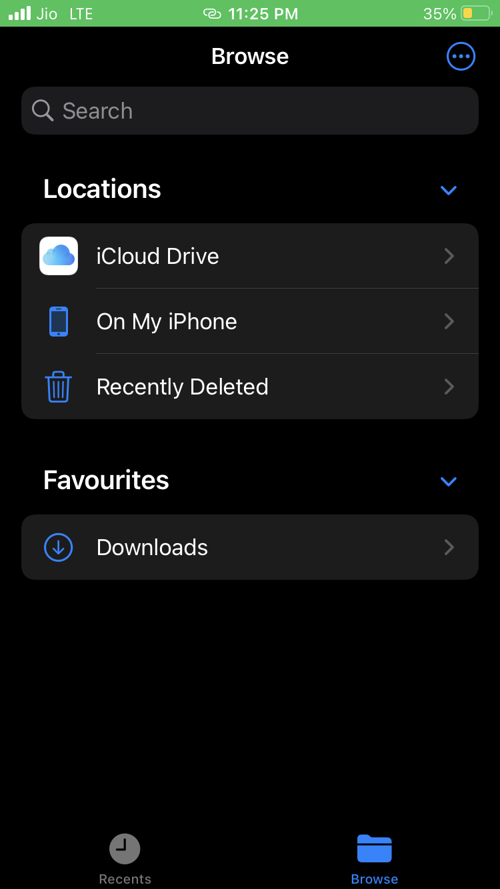
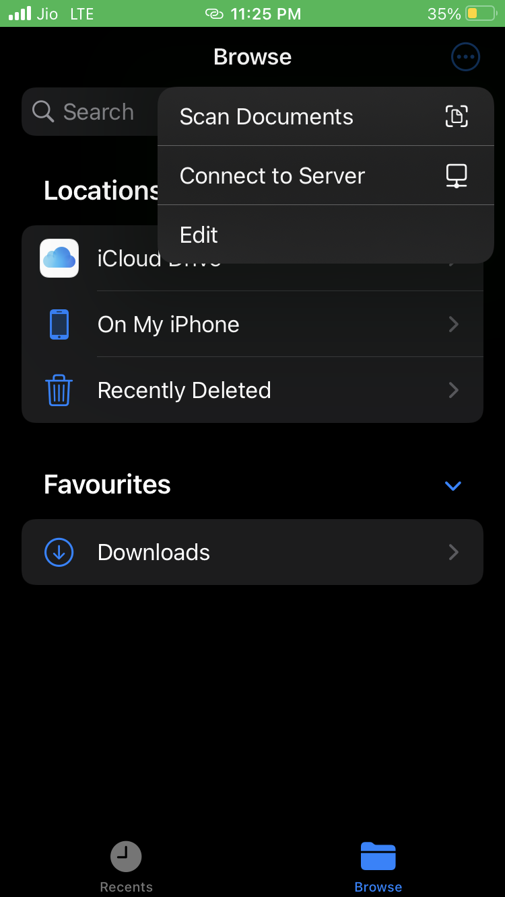
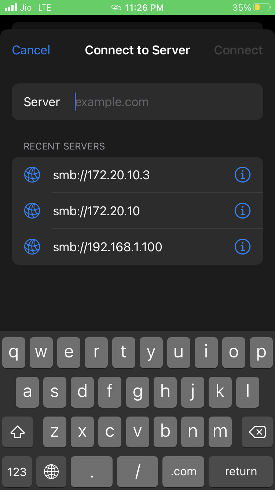
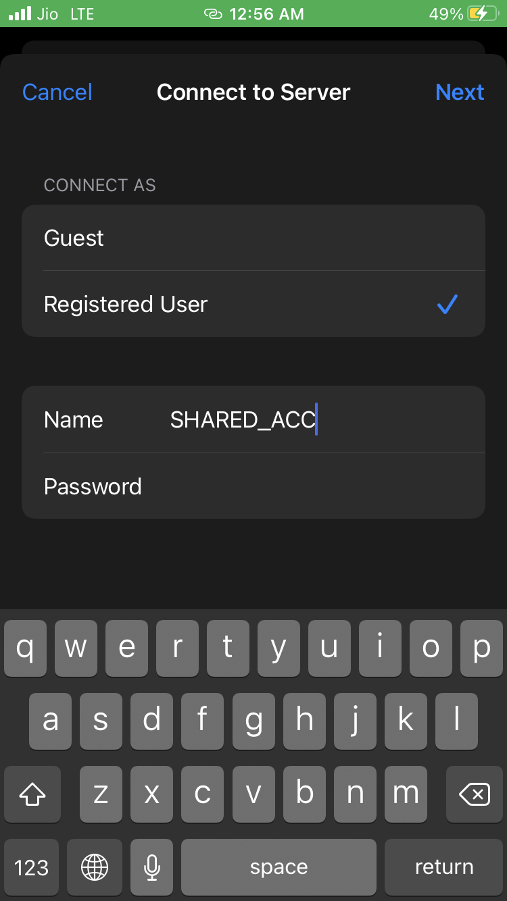
6. YOU ARE GOOD TO GO
now to share from windows to iphone -> simply put anything in the shared folder
And to share from iphone to windows :-
- select photos
- save to files
- there you will get the option of your ipAddress
- in there you will find your shared folder
- when you put files into that folder it will simply reflect into your computer